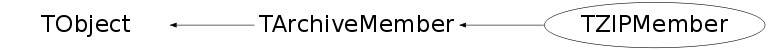

class TZIPMember: public TArchiveMember
TZIPFile This class describes a ZIP archive file containing multiple sub-files. Typically the sub-files are ROOT files. Notice that the ROOT files should not be compressed when being added to the ZIP file, since ROOT files are normally already compressed. Such a ZIP file should be created like: zip -n root multi file1.root file2.root which creates a ZIP file multi.zip. A ZIP archive consists of files compressed with the popular ZLIB compression algorithm. The archive format is used among others by PKZip and Info-ZIP. The compression algorithm is also used by GZIP and the PNG graphics standard. The format of the archives is explained briefly below. This class provides an interface to read such archives. A ZIP archive contains a prefix, series of archive members (sub-files), and a central directory. In theory the archive could span multiple disks (or files) with the central directory of the whole archive on the last disk, but this class does not support such multi-part archives. The prefix is only used in self-extracting executable archive files. The members are stored in the archive sequentially, each with a local header followed by the (optionally) compressed data; the local header describes the member, including its file name and compressed and real sizes. The central directory includes the member details again, plus allows an extra member comment to be added. The last member in the central directory is an end marker that can contain a comment for the whole archive. Both the local header and the central directory can also carry extra member-specific data; the data in the local and global parts can be different. The fact that the archive has a global directory makes it efficient and allows for only the reading of the desired data, one does not have to scan through the whole file to find the desired sub-file. The Zip64 extensions are supported so files larger than 2GB can be stored in archives larger than 4 GB. Once the archive has been opened, the client can query the members and read their contents by asking the archive for an offset where the sub-file starts. The members can be accessed in any order.
Function Members (Methods)
public:
| TZIPMember() | |
| TZIPMember(const char* name) | |
| TZIPMember(const TZIPMember& member) | |
| virtual | ~TZIPMember() |
| void | TObject::AbstractMethod(const char* method) const |
| virtual void | TObject::AppendPad(Option_t* option = "") |
| virtual void | TObject::Browse(TBrowser* b) |
| static TClass* | Class() |
| virtual const char* | TObject::ClassName() const |
| virtual void | TObject::Clear(Option_t* = "") |
| virtual TObject* | TObject::Clone(const char* newname = "") const |
| virtual Int_t | TObject::Compare(const TObject* obj) const |
| virtual void | TObject::Copy(TObject& object) const |
| virtual void | TObject::Delete(Option_t* option = "")MENU |
| virtual Int_t | TObject::DistancetoPrimitive(Int_t px, Int_t py) |
| virtual void | TObject::Draw(Option_t* option = "") |
| virtual void | TObject::DrawClass() constMENU |
| virtual TObject* | TObject::DrawClone(Option_t* option = "") constMENU |
| virtual void | TObject::Dump() constMENU |
| virtual void | TObject::Error(const char* method, const char* msgfmt) const |
| virtual void | TObject::Execute(const char* method, const char* params, Int_t* error = 0) |
| virtual void | TObject::Execute(TMethod* method, TObjArray* params, Int_t* error = 0) |
| virtual void | TObject::ExecuteEvent(Int_t event, Int_t px, Int_t py) |
| virtual void | TObject::Fatal(const char* method, const char* msgfmt) const |
| virtual TObject* | TObject::FindObject(const char* name) const |
| virtual TObject* | TObject::FindObject(const TObject* obj) const |
| UInt_t | GetAttrExt() const |
| UInt_t | GetAttrInt() const |
| const char* | TArchiveMember::GetComment() const |
| Long64_t | TArchiveMember::GetCompressedSize() const |
| UInt_t | GetCRC32() const |
| Long64_t | TArchiveMember::GetDecompressedSize() const |
| virtual Option_t* | TObject::GetDrawOption() const |
| static Long_t | TObject::GetDtorOnly() |
| Long64_t | TArchiveMember::GetFilePosition() const |
| void* | GetGlobal() const |
| UInt_t | GetGlobalLen() const |
| virtual const char* | TObject::GetIconName() const |
| UInt_t | GetLevel() const |
| void* | GetLocal() const |
| UInt_t | GetLocalLen() const |
| UInt_t | GetMethod() const |
| TDatime | TArchiveMember::GetModTime() const |
| virtual const char* | TArchiveMember::GetName() const |
| virtual char* | TObject::GetObjectInfo(Int_t px, Int_t py) const |
| static Bool_t | TObject::GetObjectStat() |
| virtual Option_t* | TObject::GetOption() const |
| Long64_t | TArchiveMember::GetPosition() const |
| virtual const char* | TObject::GetTitle() const |
| virtual UInt_t | TObject::GetUniqueID() const |
| virtual Bool_t | TObject::HandleTimer(TTimer* timer) |
| virtual ULong_t | TObject::Hash() const |
| virtual void | TObject::Info(const char* method, const char* msgfmt) const |
| virtual Bool_t | TObject::InheritsFrom(const char* classname) const |
| virtual Bool_t | TObject::InheritsFrom(const TClass* cl) const |
| virtual void | TObject::Inspect() constMENU |
| void | TObject::InvertBit(UInt_t f) |
| virtual TClass* | IsA() const |
| Bool_t | TArchiveMember::IsDirectory() const |
| virtual Bool_t | TObject::IsEqual(const TObject* obj) const |
| virtual Bool_t | TObject::IsFolder() const |
| Bool_t | TObject::IsOnHeap() const |
| virtual Bool_t | TObject::IsSortable() const |
| Bool_t | TObject::IsZombie() const |
| virtual void | TObject::ls(Option_t* option = "") const |
| void | TObject::MayNotUse(const char* method) const |
| virtual Bool_t | TObject::Notify() |
| void | TObject::Obsolete(const char* method, const char* asOfVers, const char* removedFromVers) const |
| static void | TObject::operator delete(void* ptr) |
| static void | TObject::operator delete(void* ptr, void* vp) |
| static void | TObject::operator delete[](void* ptr) |
| static void | TObject::operator delete[](void* ptr, void* vp) |
| void* | TObject::operator new(size_t sz) |
| void* | TObject::operator new(size_t sz, void* vp) |
| void* | TObject::operator new[](size_t sz) |
| void* | TObject::operator new[](size_t sz, void* vp) |
| TZIPMember& | operator=(const TZIPMember& rhs) |
| virtual void | TObject::Paint(Option_t* option = "") |
| virtual void | TObject::Pop() |
| virtual void | Print(Option_t* option = "") const |
| virtual Int_t | TObject::Read(const char* name) |
| virtual void | TObject::RecursiveRemove(TObject* obj) |
| void | TObject::ResetBit(UInt_t f) |
| virtual void | TObject::SaveAs(const char* filename = "", Option_t* option = "") constMENU |
| virtual void | TObject::SavePrimitive(ostream& out, Option_t* option = "") |
| void | TObject::SetBit(UInt_t f) |
| void | TObject::SetBit(UInt_t f, Bool_t set) |
| virtual void | TObject::SetDrawOption(Option_t* option = "")MENU |
| static void | TObject::SetDtorOnly(void* obj) |
| static void | TObject::SetObjectStat(Bool_t stat) |
| virtual void | TObject::SetUniqueID(UInt_t uid) |
| virtual void | ShowMembers(TMemberInspector& insp) |
| virtual void | Streamer(TBuffer& b) |
| void | StreamerNVirtual(TBuffer& b) |
| virtual void | TObject::SysError(const char* method, const char* msgfmt) const |
| Bool_t | TObject::TestBit(UInt_t f) const |
| Int_t | TObject::TestBits(UInt_t f) const |
| virtual void | TObject::UseCurrentStyle() |
| virtual void | TObject::Warning(const char* method, const char* msgfmt) const |
| virtual Int_t | TObject::Write(const char* name = 0, Int_t option = 0, Int_t bufsize = 0) |
| virtual Int_t | TObject::Write(const char* name = 0, Int_t option = 0, Int_t bufsize = 0) const |
protected:
| virtual void | TObject::DoError(int level, const char* location, const char* fmt, va_list va) const |
| void | TObject::MakeZombie() |
Data Members
public:
| enum TObject::EStatusBits { | kCanDelete | |
| kMustCleanup | ||
| kObjInCanvas | ||
| kIsReferenced | ||
| kHasUUID | ||
| kCannotPick | ||
| kNoContextMenu | ||
| kInvalidObject | ||
| }; | ||
| enum TObject::[unnamed] { | kIsOnHeap | |
| kNotDeleted | ||
| kZombie | ||
| kBitMask | ||
| kSingleKey | ||
| kOverwrite | ||
| kWriteDelete | ||
| }; |
protected:
| TString | TArchiveMember::fComment | Comment field |
| Long64_t | TArchiveMember::fCsize | Compressed size |
| Bool_t | TArchiveMember::fDirectory | Flag indicating this is a directory |
| Long64_t | TArchiveMember::fDsize | Decompressed size |
| Long64_t | TArchiveMember::fFilePosition | Byte position in archive where member data starts |
| TDatime | TArchiveMember::fModTime | Modification time |
| TString | TArchiveMember::fName | Name of member |
| Long64_t | TArchiveMember::fPosition | Byte position in archive |
private:
| UInt_t | fAttrExt | External file attributes |
| UInt_t | fAttrInt | Internal file attributes |
| UInt_t | fCRC32 | CRC-32 for all decompressed data |
| void* | fGlobal | Extra directory data |
| UInt_t | fGlobalLen | Length of extra directory data |
| UInt_t | fLevel | Compression level |
| void* | fLocal | Extra file header data |
| UInt_t | fLocalLen | Length of extra file header data |
| UInt_t | fMethod | Compression type |
Class Charts
{kind=link}
{kind=link}
{kind=link}
{kind=link}
